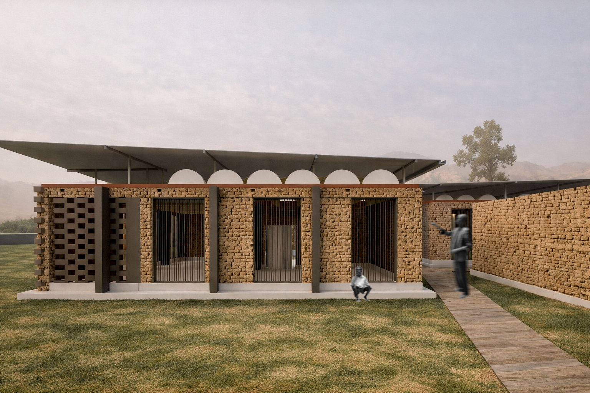

A
Proyecto: Escuela Rural en Senegal
Tipo: Renders para concurso internacional
Autor: Arq. Alejandro Salazar
Escuela Rural en Senegal
Escuela concebida desde el clima, el territorio y la comunidad. El adobe actúa como material principal por su baja huella ambiental, su alta inercia térmica y su disponibilidad local, permitiendo espacios confortables sin recurrir a sistemas mecánicos.
Autoría del modelado del Proyecto: Estudiantes de la Universidad Católica de Cuenca.
Autores: Mateo Sebastian Rodas Guzman/ Pablo Arias. Autor Render: Arq. Ariel Alejandro Salazar Zanipatin.

Autoría: Propia del autor

Autoría: Propia del autor

Autoría: Propia del autor

Autoría: Propia del autor
“La arquitectura no impone al lugar, aprende de él.”
Contacto
Correo: alejandrosalazarz@icloud.com
Teléfono: 0984527298
Gracias por visitar este proyecto.
Arq. Alejandro Salazar
Cuenca – Ecuador